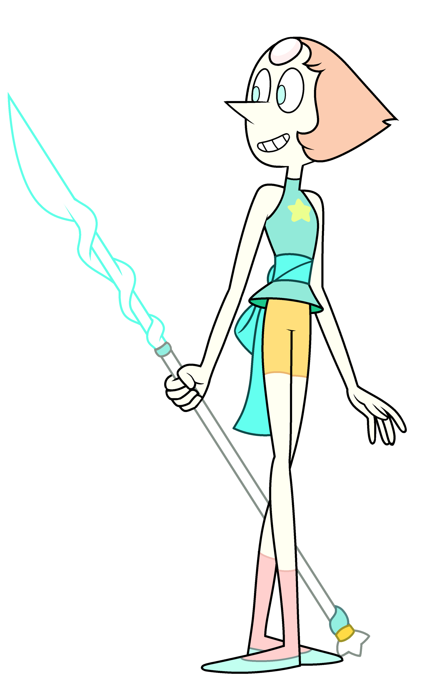

Pearl
The precise and intellectual oldest member of the Crystal Gems who is a bit of short-tempered perfectionist and often tries to act as a strategist for her teammates. Her gemstone, which is embedded in her forehead, is a white pearl that she can use to summon a spear and create holographic images. Pearl's name is actually a term for a caste of Gems on Homeworld who function only as menial servants, but Pearl, being a ward of Rose Quartz and the first of her known followers, rejected her caste role and trained herself to be a capable fighter and technician. However, during most of the series, she is revealed to have romantic feelings for Rose, which she tends to instinctively project as a smothering parent with Steven, due to this, she dealt with strong jealousy over Greg and Rose's relationship, she believed that he took Rose away from her and caused her absence, but in the latter episode, after a talk with Greg about her struggles over who she is without Rose (before gradually becoming able to stand on her own two feet earlier on), their friendship with each other became much better than before. Pearl really cares about Steven and can be overprotective of him, willing to protect him at any cost, because she thinks he is the most important member of the Crystal Gems.